My Photography
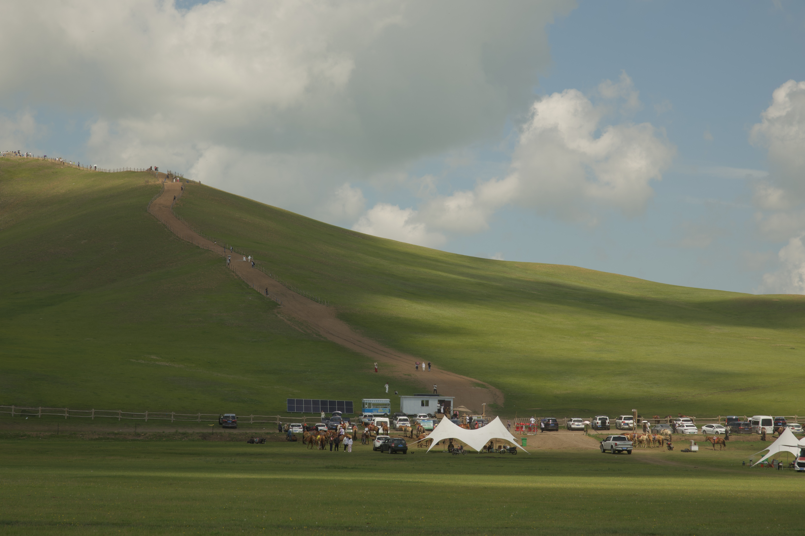
Photography is one of my interests. I enjoy capturing moments and exploring different perspectives through photographs.
More of My Photography
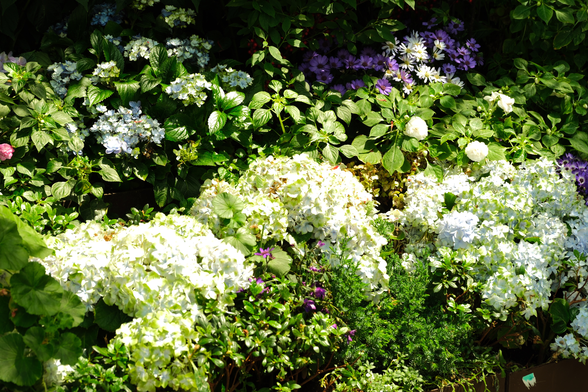
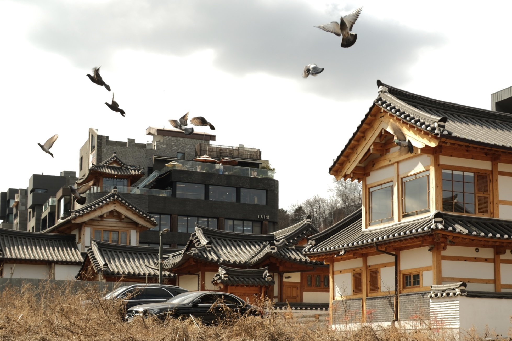
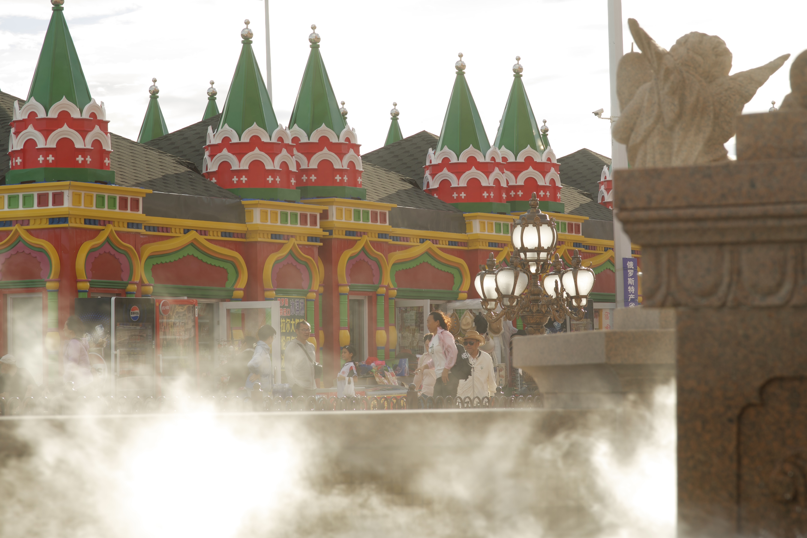
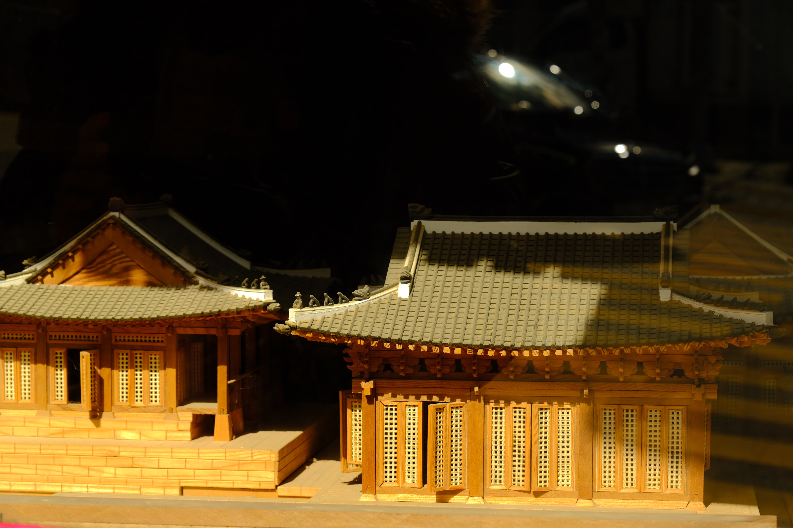
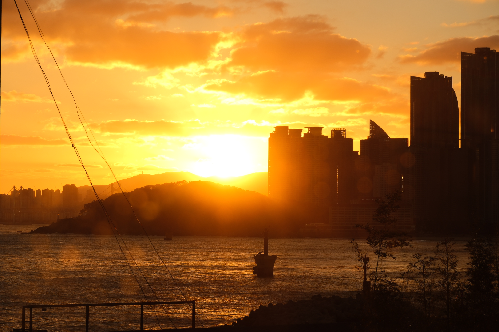
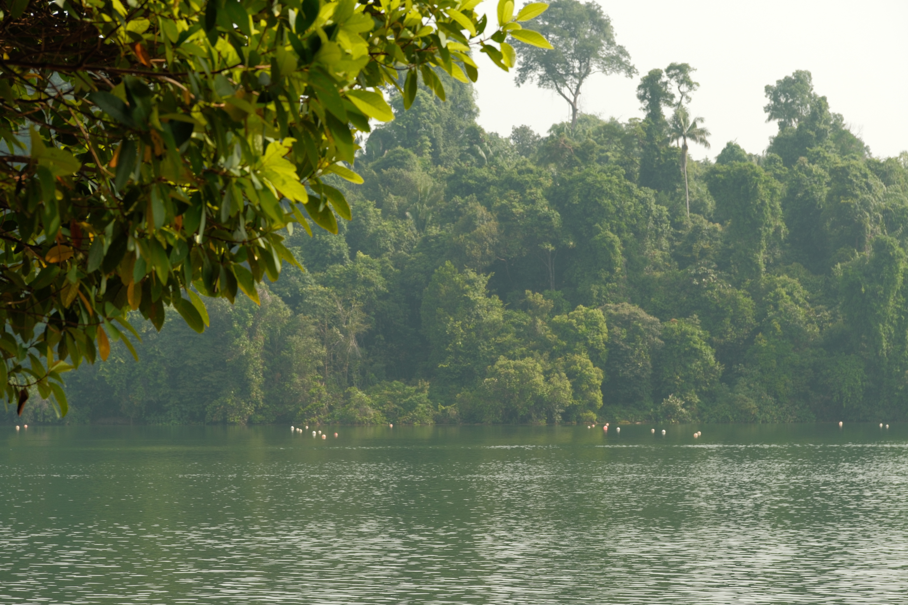
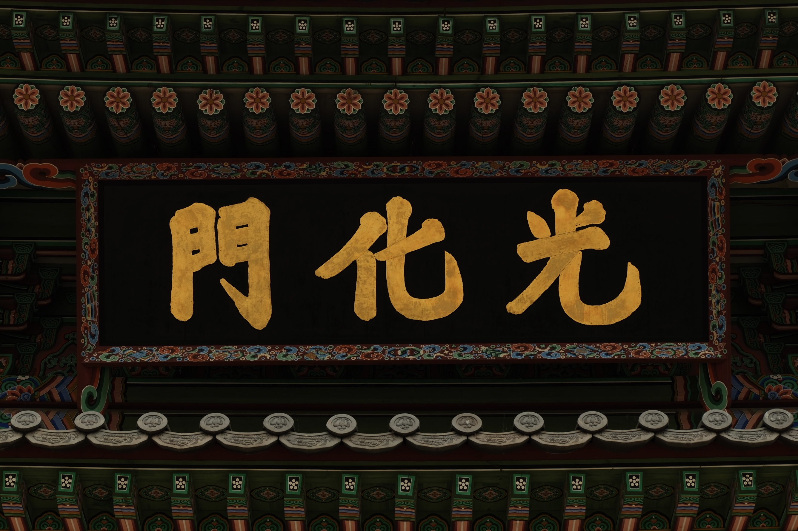
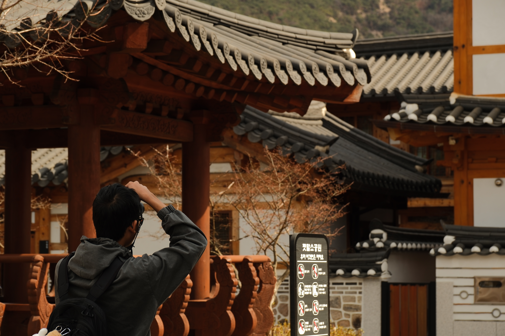
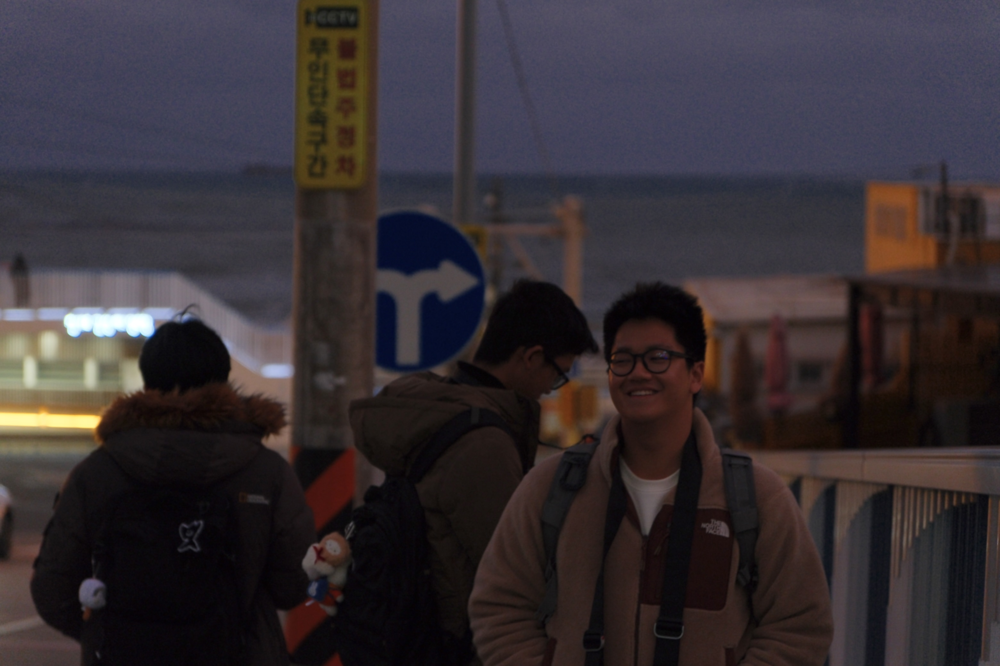
My Experiences
I have gained experience in various areas through my studies and extracurricular activities.
Projects & Competitions
Participation
I participated in the Intervarsity UnGPTable Challenge ESG Edition.
Collaboration
I collaborated in a team of 3 to analyse an ESG-related business challenge and develop practical, interdisciplinary solutions.
Skills Applied
I applied research, critical thinking and problem-solving skills to evaluate sustainability challenges and formulate recommendations.
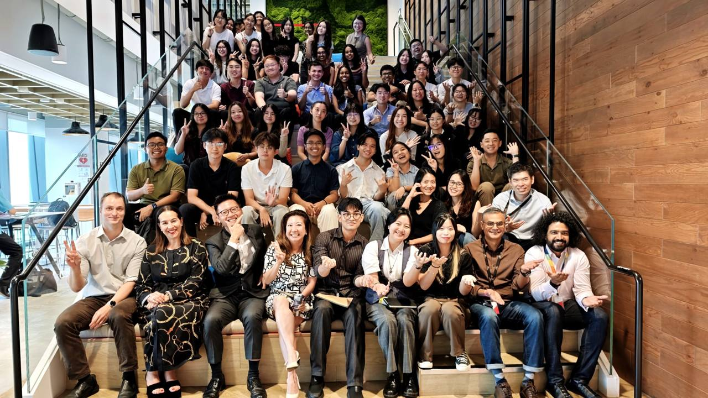